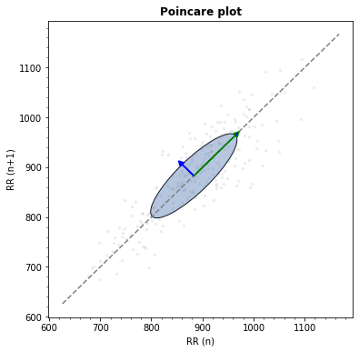

systole.plots.plot_poincare#
- systole.plots.plot_poincare(rr: Union[numpy.ndarray, list], input_type: str = 'peaks', figsize: Optional[Union[int, List[int], Tuple[int, int]]] = None, backend: str = 'matplotlib', ax: Optional[matplotlib.axes._axes.Axes] = None) Union[bokeh.plotting.figure.Figure, matplotlib.axes._axes.Axes][source]#
Poincare plot.
- Parameters
- rrnp.ndarray | list
Boolean vector of peaks detection or RR intervals.
- input_typestr
The type of input vector. Default is “peaks” (a boolean vector where 1 represents the occurrence of R waves or systolic peaks). Can also be “rr_s” or “rr_ms” for vectors of RR intervals, or interbeat intervals (IBI), expressed in seconds or milliseconds (respectively).
- figsizelist | tuple | int | None
Figure size. Default is (13, 5).
- backend: str
Select plotting backend {“matplotlib”, “bokeh”}. Defaults to “matplotlib”.
- ax
matplotlib.axes.Axes| None Where to draw the plot. Default is None (create a new figure).
- Returns
- plot
matplotlib.axes.Axesorbokeh.plotting.figure.Figure The matplotlib axes, or the boken figure containing the plot.
- plot
See also
Examples
Visualizing poincare plot from RR time series using Matplotlib as plotting backend.
from systole import import_rr from systole.plots import plot_poincare # Import PPG recording as numpy array rr = import_rr().rr.to_numpy() plot_poincare(rr, input_type="rr_ms")
<AxesSubplot:title={'center':'Poincare plot'}, xlabel='RR (n)', ylabel='RR (n+1)'>Using Bokeh backend